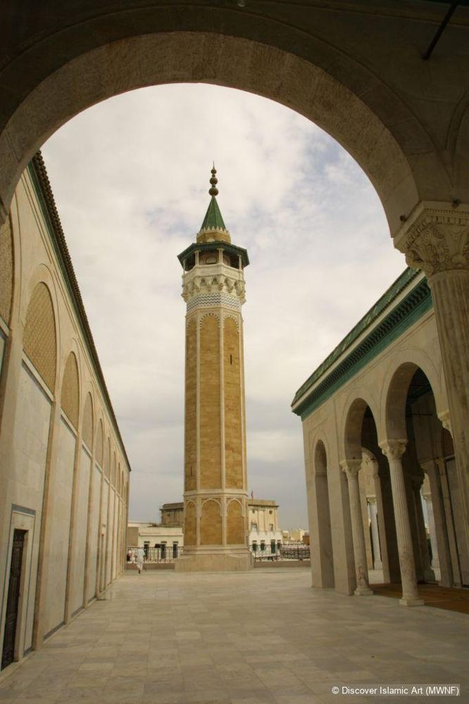

Gambaran
Menghadap Lapangan Halfaouine, di utara medina Tunis, masjid dari awal abad ke-19 ini adalah masjid besar terakhir yang dibangun di Tunis sebelum protektorat Prancis. Tiang dan dindingnya dari marmer Italia menjadikannya musala Tunisia yang paling kuat dipengaruhi gaya Eropa.
Foto



Sejarah
Masjid ini menyandang nama Youssef Sahib et-Tabaa, yang lahir sekitar 1765 di Moldavia, diperbudak sejak kecil, lalu pada 1781 masuk ke pengabdian Pangeran Hammouda Pasha; pada 1782 ia menjadi penjaga stempelnya (sahib et-tabaa), kemudian menteri utamanya. Ia membangun masjid ini dari 1808 hingga 1814 di bawah pimpinan mandor Haji Sassi bin Frija, dan meresmikannya pada 1814. Terluka dalam sebuah serangan di Bardo pada September 1814, ia wafat pada Januari 1815: menaranya tetap belum selesai hingga tahun 1970-an.
Arsitektur
Dibangun di atas toko dan gudang, pada fondasi batu pahat dari reruntuhan Kartago, masjid ini menjulang di atas lapangan. Tangga berbelok naik ke serambi timur, dengan dua baris tiang dan lima lengkungan yang terbuka ke lapangan; menara segi delapan berdiri di ujungnya. Tiga serambi mengapit ruang salat yang memiliki 9 lorong dan 7 ruas, beratap lengkung setengah tong. Dua ruas paling ujung, di sepanjang dinding kiblat dan dinding di seberangnya, masing-masing memiliki tiga kubah: satu di tengah dan satu di setiap sudut.
Secara rinci
Menurut catatan museum virtual Discover Islamic Art, tidak ada musala Tunisia lain yang menunjukkan pengaruh Barat sejelas ini. Marmernya, lebih banyak daripada di tempat lain, didatangkan langsung dari Carrara di Italia. Tiang-tiang ramping beralur memikul kepala tiang komposit, tafsiran Italia atas model Tunisia masa Turki; lengkungannya, yang nyaris tidak lagi berbentuk tapal kuda, meninggalkan bentuk tapal kuda klasik, dan ambangnya berhias relief neo-barok. Ubin keramik hanya tersisa di bagian atas dinding. Mihrab dan mimbar tetapnya, dari marmer aneka warna, memadukan lengkungan semu-Gotik, motif bunga dan sentuhan sepuhan emas. Serambi timur memiliki mihrab luar untuk salat saat cuaca panas.
Peran dan pengaruh
Masjid ini adalah jantung sebuah kompleks luas yang didirikan sang menteri untuk melayani kawasan Halfaouine: dua madrasah, sebuah pasar, sebuah hammam, sebuah air mancur umum (sabil), sebuah fondouk, istananya dan makamnya, yang seperti kedua madrasah dimasuki dari fasad utara.
Tanggal penting
- 1808Menteri Youssef Sahib et-Tabaa memulai pembangunan
- 1814Peresmian masjid oleh pendirinya
- 1815Wafatnya sang pendiri, yang terluka di Bardo setahun sebelumnya
- 1970Menara akhirnya mendapat lentera puncaknya (1970-an)
Salat Jumat dan pembacaan Al-Qur'an
Informasi diberikan dan dikonfirmasi oleh pengunjung, atau diambil dari sumber publik yang disebutkan. Tidak ada waktu yang dikarang.
Berkunjung
Ini pertama-tama adalah tempat salat: berpakaianlah sopan, lepaskan alas kaki untuk masuk ruang salat, dan hindari waktu salat. Di beberapa masjid besar, pengunjung non-Muslim boleh masuk ke halaman, tetapi tidak ke ruang salat. Jam buka berubah-ubah: tanyakan di tempat.
Di peta
Dokumen dan tautan
Sumber
- Teks ditulis oleh Masjid di Tunisia berdasarkan dokumen di atas (Wikipedia, Qantara, Discover Islamic Art, UNESCO), diperiksa pada 09/10/2026.
- Wikidata : Q3324882 (CC0)
- Foto: Wikimedia Commons, pembuat dan lisensi di bawah setiap foto.
- Bagian « Secara rinci » dan foto bertanda Discover Islamic Art: dari Museum With No Frontiers (MWNF), dengan izinnya.
- Lokasi: OpenStreetMap (ODbL) dan Wikidata.